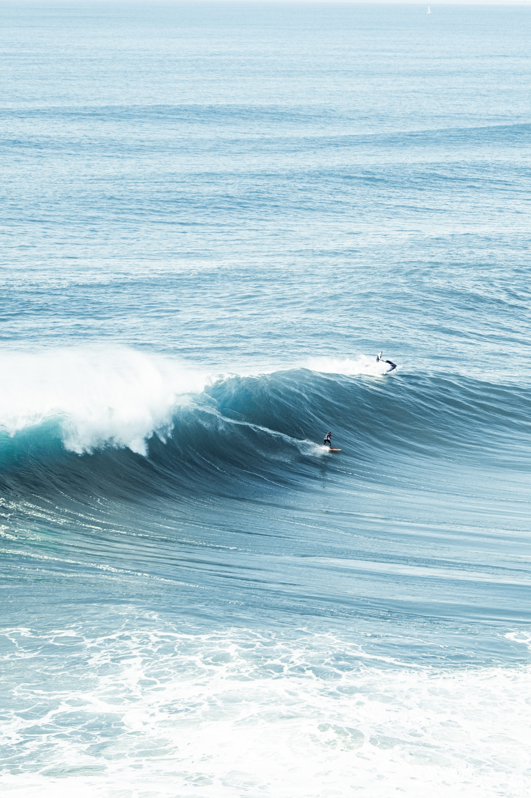

Surfers seek out strong waves called swells. Swells are stable waves that form far away from the beach. Swells are formed by storm systems or other wind patterns.
Two things determine the strength of a swell. First, swells are influenced by the strength of the winds that form them. Swells can help predict how strong a storm is as it approaches land. Most storm systems that form far out to sea never reach land with much strength. Sometimes, however, they do. These storms arrive as hurricanes or typhoons. Hours before a hurricane approaches shore, large and frequent swells signal its arrival. Surfers have been known to ignore hurricane warnings and stay out on stormy beaches because the swells are so frequent and strong.
The second feature that influences swell strength is the wind's fetch. Fetch is a geographic term that describes the amount of open water over which a wind has blown. The length of fetch is why ocean swells are usually much stronger than lake swells. In the open ocean, a wave's fetch can be thousands of kilometers.
 Back to Home
Back to Home